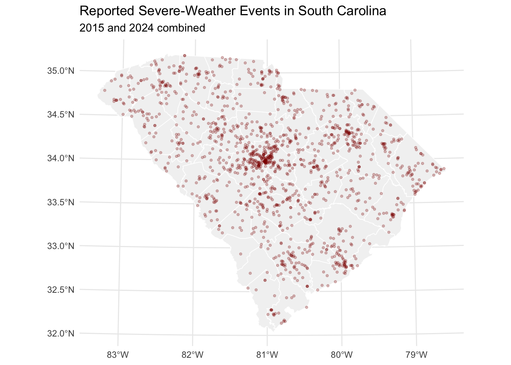
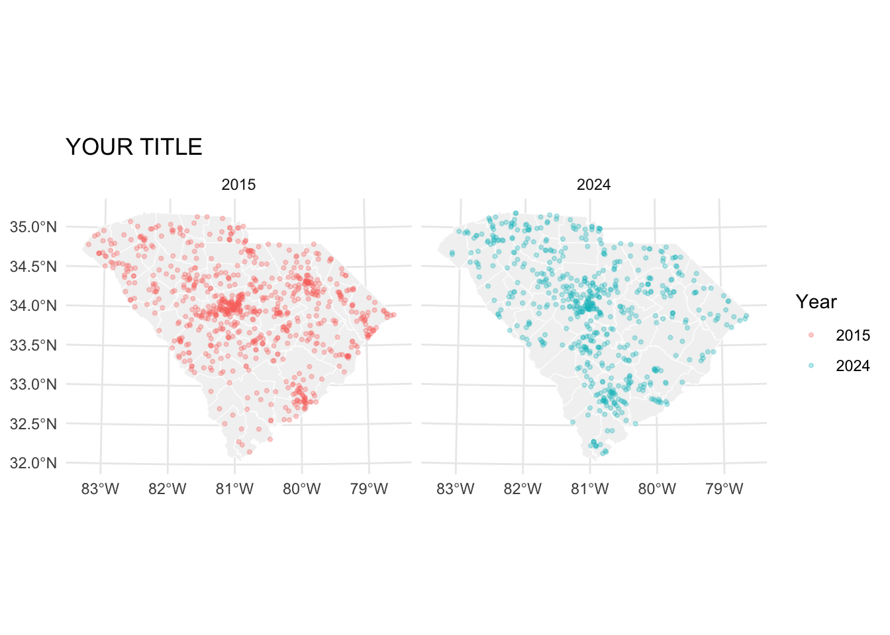
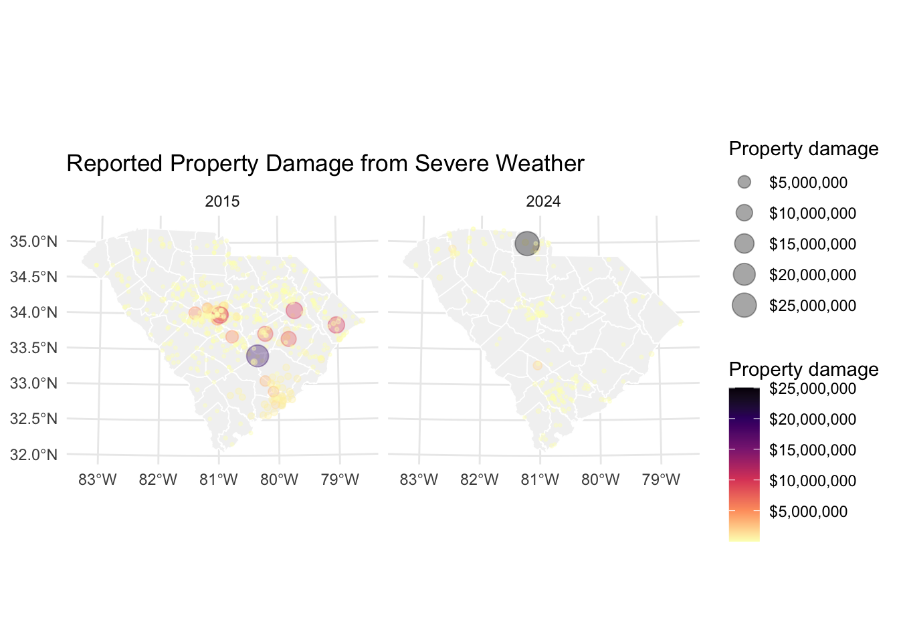

library(tidyverse)
library(sf)
library(tigris) # for loading shapefiles from the census
library(classInt) # for creating classification categories
library(scales) # for making changes to scales in graphics
options(tigris_use_cache = TRUE)
all_storms <- read_csv("data/all_storms.csv") |>
mutate(
YEAR = factor(YEAR),
EVENT_TYPE = factor(EVENT_TYPE)
)Homework 1 Part B: Mapping the Storm
From descriptive statistics to spatial evidence
Due date: September 25, Friday, 11:59 pm 75 points + 20 optional bonus points
The assignment story
In Part A, you cleaned and summarized South Carolina severe-weather data for 2015 and 2024. You examined which hazards were most common, how reported property damage was distributed, and whether the two years differed.
In Part B, you will continue the same investigation by asking a new set of questions:
- Where did severe-weather events occur?
- How did their locations, spatial spread, and property damage differ between 2015 and 2024?
- What can maps and descriptive spatial statistics reveal that the tables and graphs in Part A could not?
- How could this evidence inform an emergency-planning decision?
You are not starting a separate analysis. Part A tells you what happened and how much; Part B adds where it happened and how the geography changed.
Your role
Assume that you are a GIS analyst advising the South Carolina Emergency Management Division. The agency wants to understand whether the geography of severe-weather hazards changed between 2015 and 2024 and where response resources might be most useful.
Your final task is to turn your maps and spatial statistics into a short, evidence-based recommendation.
Instructions
- Save a copy of this file as
hw1_partB_answers.qmd. - Keep your code inside R code chunks and write your interpretations outside the code chunks.
- Your code does not have to match the examples exactly. You may adjust colors, point sizes, transparency, labels, facets, themes, and other parameters.
- The purpose is not to test whether you can memorize R syntax. The purpose is to help you become comfortable modifying code, evaluating maps, selecting spatial statistics, and interpreting results.
- Render your completed file to HTML before submitting it.
- The collaboration and generative-AI policies provided in Part A also apply to Part B.
Point distribution
| Section | Points |
|---|---|
| Connecting Parts A and B | 5 |
| Mapping severe-weather events | 35 |
| Applying descriptive spatial statistics | 35 |
| Total | 75 |
| Optional challenge and feedback | Up to 20 bonus points |
1 Setup
1.1 Load packages and data
The file all_storms.csv contains the cleaned and combined 2015 and 2024 data used in Part A. We begin with this file so that Part B can focus on mapping and spatial reasoning rather than repeating the earlier data-cleaning work.
1.2 Convert the event data to spatial data
Each row contains a beginning longitude and latitude. The code below converts those coordinates into point geometries and transforms them to a projected coordinate reference system appropriate for analysis within South Carolina.
all_storms_sf <- st_as_sf(
all_storms,
coords = c("BEGIN_LON", "BEGIN_LAT"),
crs = 4269, # Geographic coordinates (lat and lon)
remove = FALSE
) |>
st_transform(crs = 32133) # converted to cartesian coordinates for 2d map (x and y)1.3 Retrieve a South Carolina county layer
county_geo <- counties(
state = "SC",
year = 2024,
cb = TRUE,
class = "sf"
) |>
st_transform(crs = 32133)
Note
The county layer provides geographic context. It is not the unit of analysis: each severe-weather record remains a point event.
2 Connect Parts A and B
Question 1: Begin with a hypothesis [5 points]
Before making a map, return to one result from Part A.
- State one finding from Part A about event frequency or property damage.
- Based on that finding, predict one spatial pattern you expect to observe in Part B.
- Explain briefly why a map is needed to evaluate your prediction.
Write approximately 3–4 sentences.
Your response:
3 Mapping severe-weather events [35 points]
3.1 Start with a basic event map
The map below treats all events alike. Run it first, then use it as a starting point for Question 2.
map_events_start <- ggplot() +
geom_sf(
data = county_geo,
fill = "grey95",
color = "white",
linewidth = 0.3
) +
geom_sf(
data = all_storms_sf,
color = "darkred",
size = 0.8,
alpha = 0.25
) +
theme_minimal() +
labs(
title = "Reported Severe-Weather Events in South Carolina",
subtitle = "2015 and 2024 combined"
) +
theme(axis.title = element_blank())
map_events_start
Question 2: Make the basic map more informative [10 points]
Create a map that compares the locations of all reported events in 2015 and 2024. You may use separate colors, facets, or another clear design.
Your map must include:
- a meaningful title and legend;
- visible county boundaries;
- a clear distinction between 2015 and 2024; and
- at least three aesthetic changes to the starter map, such as color, size, transparency, background fill, labels, theme, or facet arrangement.
# Starter structure: modify it rather than beginning from a blank page.
map_events_year <- ggplot() +
geom_sf(
data = county_geo,
fill = "grey95",
color = "white"
) +
geom_sf(
data = all_storms_sf,
aes(color = YEAR),
size = 0.8,
alpha = 0.30
) +
facet_wrap(~YEAR) +
theme_minimal() +
labs(
title = "YOUR TITLE",
color = "Year"
) +
theme(axis.title = element_blank())
map_events_year
In 2–3 sentences, describe one spatial similarity and one spatial difference between the two years. Also identify one aesthetic choice you made and explain how it improves the map.
Your interpretation:
3.2 Map property damage
Property damage is highly right-skewed, as you observed in Part A. If raw dollar values control point size or color, a few exceptionally damaging events can visually dominate the map.
The first map below uses the raw property-damage values.
NoteOptional resource
There are lots of colors one can use, but nowadays cartographers are using color schemes called ‘viridis’ that are universally accepted. https://cran.r-project.org/web/packages/viridis/vignettes/intro-to-viridis.html
storms_damage_sf <- all_storms_sf |>
filter(!is.na(PROP_DAMAGE_USD), PROP_DAMAGE_USD > 0)
map_damage_raw <- ggplot() +
geom_sf(
data = county_geo,
fill = "grey95",
color = "white",
linewidth = 0.3
) +
geom_sf(
data = storms_damage_sf,
aes(
size = PROP_DAMAGE_USD,
color = PROP_DAMAGE_USD
),
alpha = 0.35
) +
scale_size_continuous(
range = c(0.5, 6),
labels = label_dollar()
) +
scale_color_viridis_c(
option = "magma",
direction = -1,
labels = label_dollar()
) +
facet_wrap(~YEAR) +
theme_minimal() +
labs(
title = "Reported Property Damage from Severe Weather",
size = "Property damage",
color = "Property damage"
) +
theme(axis.title = element_blank())
map_damage_raw
Question 3: Raw versus log-scaled damage maps [15 points]
Create a second version of the property-damage map in which both the size and color scales use a base-10 logarithmic transformation. You do not need to create a new variable. Add the transformation within the appropriate scale_* functions.
Hints:
scale_size_continuous(trans = "log10", ...)
scale_color_viridis_c(trans = "log10", ...)# Copy and modify map_damage_raw here.
# Keep PROP_DAMAGE_USD mapped to size and color.
map_damage_log <-
NULL # REPLACE NULL WITH YOUR CODE
map_damage_logNULLAnswer the following in 3–5 sentences:
- What becomes easier to see after applying the log transformation?
- What information or visual emphasis is reduced by the transformation?
- Which version would you use to explore the statewide spatial pattern, and which might you use to emphasize the most financially damaging events?
- Why would
scale_x_log10()be inappropriate for transforming property damage on this map?
Your interpretation:
3.3 Compare event types across years
First, use the following table to see which event types occur frequently enough to compare.
event_year_counts <- all_storms_sf |>
st_drop_geometry() |>
count(YEAR, EVENT_TYPE, sort = TRUE)
event_year_counts# A tibble: 13 × 3
YEAR EVENT_TYPE n
<fct> <fct> <int>
1 2015 Thunderstorm Wind 421
2 2024 Thunderstorm Wind 285
3 2015 Flash Flood 229
4 2024 Flash Flood 163
5 2024 Hail 69
6 2015 Flood 62
7 2015 Hail 43
8 2024 Tornado 31
9 2024 Flood 26
10 2015 Heavy Rain 14
11 2015 Lightning 11
12 2024 Lightning 9
13 2015 Tornado 5Question 4: Design an event-type comparison [10 points]
Choose two event types that occur in both years. Create a map that allows the reader to compare:
- the spatial distribution of the two selected hazards;
- differences between 2015 and 2024; and
- the relative magnitude of property damage among events with positive reported damage.
Use event type for color and property damage for point size. You may use a log-transformed size scale if it improves readability. Faceting by year is recommended.
# Replace the event names with your two choices.
selected_events <- c("EVENT TYPE 1", "EVENT TYPE 2")
storms_selected_sf <- all_storms_sf |>
filter(
EVENT_TYPE %in% selected_events,
!is.na(PROP_DAMAGE_USD),
PROP_DAMAGE_USD > 0
)
# Build your map here.
map_event_types <-
NULL # REPLACE NULL WITH YOUR CODE
map_event_typesNULLIn 3–4 sentences, explain how the geography and property damage of the two selected event types differ across the two years. Refer to specific regions or counties visible on your map.
Your interpretation:
4 Descriptive spatial statistics [35 points]
Maps provide a visual description, but descriptive spatial statistics help summarize location, spread, direction, and shape. The functions below were developed for this course so that you can concentrate on selecting, mapping, and interpreting the statistics rather than programming the formulas from scratch.
source("code/descriptive_geo_functions.R")Question 5: How did the center of severe weather shift? [10 points]
For each year, calculate:
- the unweighted mean center of all severe-weather events; and
- the property-damage-weighted mean center of events with positive (more than 0 USD) reported damage.
Display all four centers on one county map using different shapes or colors. The starter code demonstrates the first calculations; adapt it to complete the analysis.
mc15 <- calc_mc(storms15_sf)
mc24 <- calc_mc(storms24_sf)
storms15_damage_sf <- storms15_sf |>
filter(!is.na(PROP_DAMAGE_USD), PROP_DAMAGE_USD > 0)
storms24_damage_sf <- storms24_sf |>
filter(!is.na(PROP_DAMAGE_USD), PROP_DAMAGE_USD > 0)
wmc15 <- calc_wmc(
storms15_damage_sf,
storms15_damage_sf$PROP_DAMAGE_USD
)
wmc24 <- NULL # REPLACE NULL WITH YOUR CALCULATION# Add year and center-type labels to the four result objects,
# combine them, and display them on a county map.
# YOUR CODEIn 3–4 sentences, answer:
- How did the unweighted mean center shift between 2015 and 2024?
- How did weighting by property damage change the center in each year?
- What does the difference between the unweighted and weighted centers tell the emergency-management agency?
Your interpretation:
Question 6: Describe the geography of one hazard [10 points]
Choose one event type that occurs often enough in both years. Use at least:
- one measure of center; and
- one measure of spatial spread or directional shape.
Display the results for 2015 and 2024 on a map. You may use the mean center, median center, standard distance, standard deviational ellipse, or their weighted versions. Select statistics that help answer a clear question about your chosen hazard.
Begin by stating your analytical question. For example:
Did the center, spread, or directional pattern of flash-flood events change between 2015 and 2024?
chosen_event <- "YOUR EVENT TYPE"
event15_sf <- storms15_sf |>
filter(EVENT_TYPE == chosen_event)
event24_sf <- storms24_sf |>
filter(EVENT_TYPE == chosen_event)
# Calculate at least one measure of center and one measure of
# spatial spread or directional shape for each year.
# YOUR CODE# Map the event points and your spatial-statistic results.
# Distinguish the years clearly.
# YOUR CODEIn 3–5 sentences:
- interpret the center and spread/shape statistics;
- explain what changed or remained similar between the years; and
- identify one feature visible in the map that is not fully captured by the statistics.
Your interpretation:
Question 7: Emergency-response hub recommendation [15 points]
The agency wants to consider a centralized response hub for flash-flood events.
Prepare a short spatial evidence brief that addresses the following:
- Where would you place a 2024 hub if the objective were to minimize overall distance to reported flash-flood events?
- Would the recommended location change if events with greater property damage received more weight?
- How do the 2024 recommendations compare with 2015?
- Which center statistic is most appropriate for each objective, and why?
Your submission must include:
- one map displaying the relevant event locations and candidate hubs;
- the spatial statistics used to generate the recommendations; and
- a 150–200 word recommendation written for an emergency-management audience.
flash_floods_sf <- all_storms_sf |>
filter(EVENT_TYPE == "Flash Flood")
# Separate the years, calculate the relevant center statistics,
# and build the decision map.
# YOUR CODESpatial evidence brief:
5 Optional challenge [up to 10 bonus points]
A single hub may be unrealistic because floods, hail, tornadoes, and thunderstorm winds require different equipment and may have different spatial patterns.
Design a multi-hub strategy using descriptive spatial statistics:
- Select at least three hazard types.
- Recommend one hazard-specific hub for each selected type.
- Recommend a master coordination hub serving the hazard-specific hubs.
- Display the system on a map.
- In no more than 200 words, explain your choice of statistics, identify one important limitation of this approach, and name one additional dataset that would improve the real-world decision.
The bonus is intentionally open-ended. There is no single correct answer; credit will be based on the logic, transparency, and spatial evidence supporting your design.
# OPTIONAL BONUS CODEBonus explanation:
6 Optional Assignment Feedback [up to 10 bonus points]
This optional prompt asks you to provide specific, evidence-based feedback that can improve this assignment for future students. Credit is based on the quality and usefulness of your analysis, and not on whether your feedback is positive (or negative)
Your response must refer to specific question numbers, code, outputs, instructions, or experiences from your completed assignment. General comments such as “I liked the assignment,” “the coding was difficult,” or “the instructions should be clearer” will receive little or no credit unless supported with specific evidence.
The generative-AI disclosure policy applies to this bonus. AI may help organize your writing, but the response must be grounded in your own submitted work and actual experience. Feedback that does not contain verifiable references to your questions, code, outputs, or troubleshooting process will not receive substantial credit.
A. Evidence of learning [3 points]
Identify one map, statistic, or interpretation from Part B that changed or improved your understanding of the severe-weather data.
Include:
the relevant question number;
what you understood before completing that question;
what you understood afterward; and
the specific output or result that led to that change.
B. Analysis of one difficulty [3 points]
Describe one substantive difficulty you encountered.
Include:
the exact question or code step;
what you expected to happen;
what actually happened;
how you resolved it, or what prevented you from resolving it; and one change to the instructions or scaffolding that would help without giving away the answer.
If the difficulty involved code, include the relevant error message or a short code excerpt.
C. Assignment revision [3 points]
Identify one specific part of the assignment that should be retained, revised, removed, or replaced.
Your recommendation must:
identify the exact section or question;
explain how it affected your learning;
propose concrete changes such as instructions or question design; and explain why your proposed revision would improve the assignment.
D. Workload estimate [1 point]
Estimate how much time you spent on:
mapping;
descriptive spatial statistics;
interpretation and writing; and
troubleshooting.
Identify any section whose workload seemed disproportionate to its point value.
Scoring criteria
| Score | Standard |
|---|---|
| 9–10 | Specific, reflective, evidence-based, and directly actionable |
| 7–8 | Substantive and specific, but one component lacks evidence or detail |
| 4–6 | Some useful feedback, but primarily descriptive or only partly actionable |
| 1–3 | Mostly general opinions with little reference to the student’s work |
| 0 | Missing, generic, or unrelated response |
7 Final submission check
Before submitting, confirm that:
- your
.qmdfile renders successfully to HTML; - every map has a clear title and readable legend;
- every mapped statistic is interpreted in words;
- your answers connect back to findings from Part A where relevant;
- you have included any required collaboration or generative-AI disclosure; and
- both the
.qmdand rendered.htmlfiles are submitted to your posit assignment along with AI prompts document.